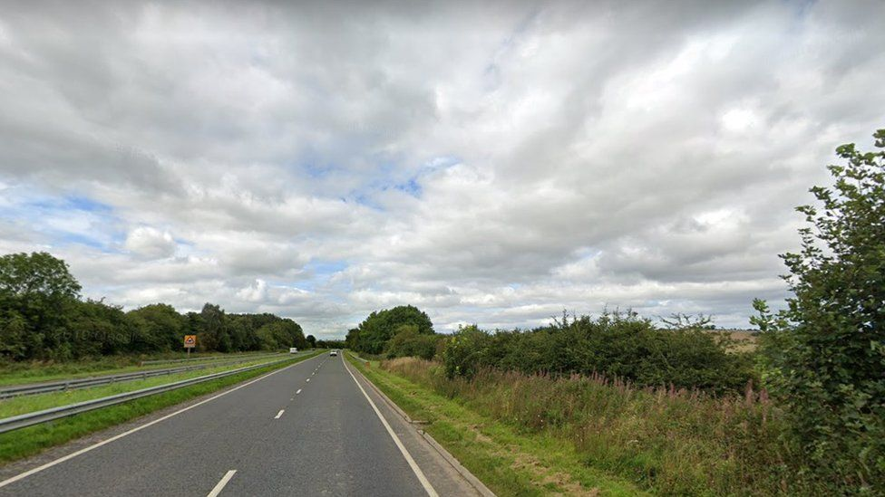
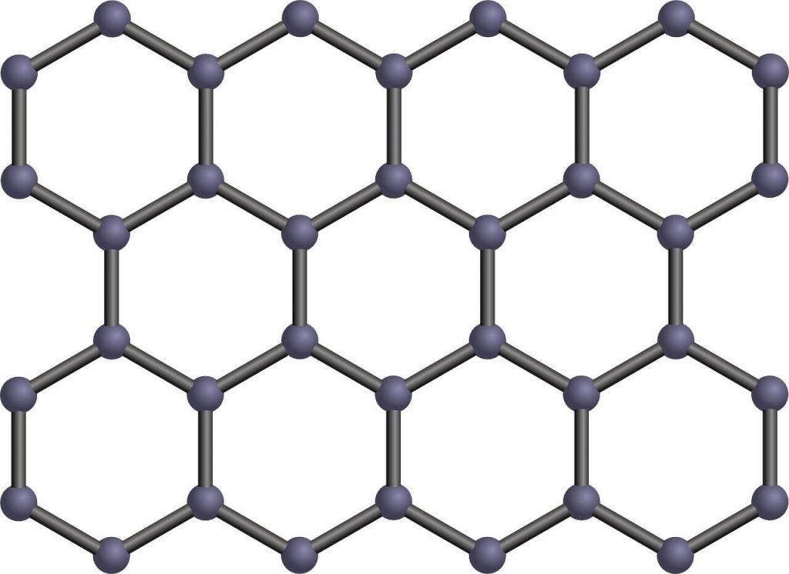

အခု လမ်းခင်းတဲ့ စမ်းသပ်မှုမှာ ကမ္ဘာ့ အမာကျောဆုံးလို့ လက်ခံထားကတဲ့ ဂရပ်ဖင်းကို အသုံးပြုခြင်းအားဖြင့် လမ်းတွေရဲ့ ကြံ့ခိုင်မှုနဲ့ တာရှည်ခံမှု ပိုပြေး ကောင်းလာမလာ စမ်းစပ်မှာ ဖြစ်ပါတယ်။ ဂရပ်ဖင်းဟာ အက်တမ် တစ်ခုပဲ အထူရှိတဲ့ အလွန်ပါးလွှာတဲ့ ဒြပ်ပစ္စည်း တမျိုး ဖြစ်ပါတယ်။
ဂရပ်ဖင်းကို ပလပ်စတစ်နဲ့ ရောပြီး ကတ္တရာလမ်း ခင်းရာမှာ ယခင်က အသုံးပြုဖူးပါတယ်။ ဒါပေမယ့် ယခု စမ်းသပ်မှုကတော့ ဂရပ်ဖင်းကို ပြန်လည် အသုံးပြု (recycle) လုပ်ထားတဲ့ ကတ္တရာလမ်းမှာ အသုံးပြုတဲ့ ပထမဆုံး စမ်းသပ်မှု ဖြစ်ပါတယ်။
“ဓါတ်ခွဲခန်းတွေမှာ စမ်းသပ်မှုကတော့ ကျေနပ်အားရစရာ အောင်မြင်မှုတွေ ရရှိခဲ့ပါတယ်။ အခု နော့သမ်ဘာလမ် (Northumberland) မှာလုပ်မယ့် စမ်းသပ်လမ်းခင်း မှုကတော့ အများသူငါ သွားနေတဲ့ လမ်းကို ကတ္တရာလမ်း ခင်းရာမှာ ဂရပ်ဖင်းကို ပထမဆုံး အသုံးပြုမှုပဲ ဖြစ်ပါတယ်။”
“ဓါတ်ခွဲခန်း စမ်းသပ်မှုတွေ အရတော့ ဂရပ်ဖင်း အသုံးပြုပြီး ခင်းထားတဲ့ လမ်းတွေဟာ သိသိသာသာ ပိုပြီး သက်တမ်းကြာရှည် ကြပါတယ်” လို့ ဂရင်းဝတ် က ဆက်ပြောပါတယ်။
ဂရပ်ဖင်းဟာ အက်တမ် ၁ လုံးပဲ ထူပါတယ်။ ဒါပေမယ့် အလွန်မာကျော ပြီး ခံနိုရည်လဲ အလွန်ကောင်းပါတယ်။ နောက်ပြီး အလွယ်တကူ ကွေးလို့ ဆန့်လို့လဲ ရပါတယ်။ ဒါ့ကြောင့် ဂရပ်ဖင်းကို နေရာ အနှံ့အပြားမှာ ကျယ်ကျယ်ပြန့်ပြန့် သုံးစွဲကြပါတယ်။ ဥပမာ – အင်ဂျင်နီယာ လုပ်ငန်း၊ အီလက်ထရောနစ် ပစ္စည်းတွေ ထုတ်လုပ်ရေး လုပ်ငန်း၊ ဖိနပ်တွေ အစရှိသဖြင့် ဂရပ်ဖင်း ကို အသုံးပြုကြတာပါ။

အခု လမ်းခင်း စမ်းသပ်မှုမှာ ပထမဆုံး အဆင့်က ပြုပြင်မယ့် လမ်းသားကို အရင် တူးထုတ်ပစ်ရပါတယ်။ တူးထုတ်လို့ ထွက်လာတဲ့ အစတွေကို ဂရပ်ဖင်း နဲ့ ရောပြီ လမ်းပြန်ခင်းတာ ဖြစ်ပါတယ်။
အကယ်လို့ အောင်မြင်ခဲ့ရင် လမ်းရဲ့ သက်တမ်းကို ကြာရှည်ခိုင်မြဲ စေမှာ ဖြစ်ပါတယ်။ ဒီလို သက်တမ်း ကြာရှည် ခံတဲ့ အလျှောက် လမ်းတွေကို ပြုပြင်ရတာလဲ သက်သွားစေမှာ ဖြစ်ပါတယ်။ ဒါ့အပြင် လမ်းပေါ်မောင်းတဲ့ ကားတွေရဲ့ လုံခြုံစိတ်ချရမှုလဲ တက်လာစေမှာ ဖြစ်ပါတယ်။
